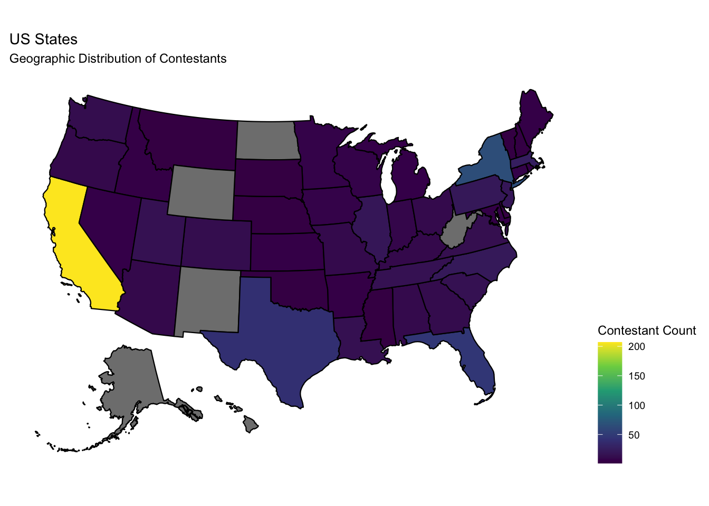
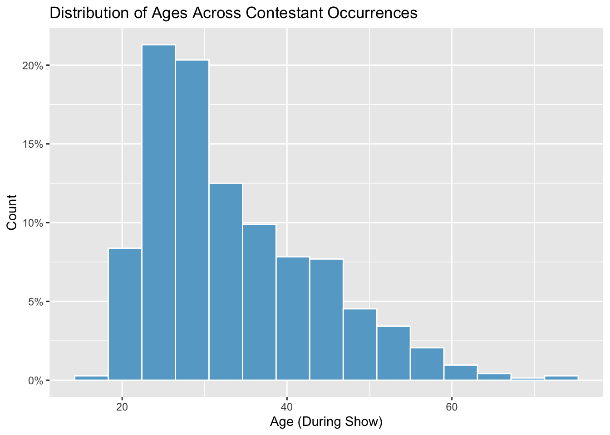

Exploratory Data Analysis
Data Cleaning and Processing
In order to analyze the show Survivor, we used data sources
from the castaway_details and castaways
datasets,1 as well as others, from the
survivoR package.2 This fan-made package contains data from
all seasons of Survivor. According to the authors of the
package, “the data was sourced from Wikipedia and the Survivor Wiki.
Other data, such as the tribe colours, was manually recorded and entered
by myself and contributors.” As each dataset contained distinct
information on the contestants for each season, it was necessary to use
joins to combine datasets to produce a final dataset to be analyzed.
This was performed using a full join on the contestants’ full names. We
primarily rely on contestant occurrences as the unit of analysis in our
report, though it should be noted that distinct individuals can appear
in multiple seasons and/or in multiple episodes per season.
Additionally, in order to standardize our results for the survival
analysis and exploratory data analysis, we removed seasons 2, 41, 42,
and 43 as the seasons contained data for a different number of days from
the standard 39 days. As the original data contains information from
several versions around the globe, it was integral to filter and only
analyze data from the U.S. edition. In order to best model our
covariates of interest, we then created a new personality type variable
(extracting whether a person is an introvert or extrovert) and a POC
indicator variable (provided by the package) instead of individual
races. We also used contestants’ home states to code contestants into a
region based on census regions and divisions of the United States.3
Furthermore, we determined that missing data was not an issue, as it
occurred in low frequency and was not patterned in nature. The final
dataset used in the analysis contains unique information for each
castaway for each season, including the following key variables:
version_season: version and season numberfull_name: contestant full nameage_during_show: age, in yearspoc: POC indicator, if known. Else, marked as White.gender: 2 levels: Female, Male.personality_type_binary: Extracted from the Myer-Briggs personality type of the castaway. 2 levels: Extrovert, Introvert.days_survived: Number of days survived in the show until eliminationregion: region in the U.S. where the contestant is from. We created this variable based on thestatevariable available in the dataset. 4 levels: West, Midwest, Northeast, South. Indicator variables for each of the 4 regions have also been created for analyses.
## cleaning Castaway Details dataset: filtering-out non-US seasons, creating personality type variable
castaway_details_us = castaway_details %>%
filter(str_detect(castaway_id, '^US')) %>%
mutate(
personality_type_binary = ifelse(
str_detect(personality_type, '^E'), "Extrovert", "Introvert")) %>%
select(-c(castaway_id, castaway, personality_type))
## Castaways dataset: filtering-out non-US seasons, renaming variables
castaways_us = castaways %>% filter(version == "US") %>%
select(-c(version, season_name, season, castaway_id, castaway, jury_status, original_tribe)) %>%
rename(age_during_show = age, days_survived = day)
## joining datasets
survivor_data_final = full_join(castaway_details_us, castaways_us, by = "full_name")
# check for multiple unique names per season
contestant_count_unique_rec = survivor_data_final %>%
group_by(version_season, full_name) %>%
summarise(count = n()) %>%
mutate(num = row_number())
## summarizing the number of contestants per season & adding to joined dataset
contestant_count_df = survivor_data_final %>%
group_by(version_season) %>%
summarise(contestant_count = n_distinct(full_name))
survivor_data_final = full_join(survivor_data_final, contestant_count_df, by = "version_season")
## reordering variables, create new variable ethnicity, fix personality type variable
survivor_data_final = survivor_data_final %>%
select(c("version_season", "full_name", "age_during_show", "race", "poc", "date_of_birth", "date_of_death", "occupation", "gender", "ethnicity", "personality_type_binary", "episode", "days_survived", "order", "contestant_count", "result", "city", "state")) %>%
mutate(ethnicity = ifelse(
str_detect(poc, 'White'), survivor_data_final$poc, survivor_data_final$race)) %>%
arrange(version_season) %>%
mutate(personality_type_binary = as.factor(personality_type_binary))
## adding region variable
survivor_data_final = survivor_data_final %>%
mutate(region =
ifelse(
state == "Connecticut"
| state == "Maine"
| state == "Massachusetts"
| state == "New Hampshire"
| state == "Rhode Island"
| state == "Vermont"
| state == "New Jersey"
| state == "New York"
| state == "Pennsylvania",
"Northeast",
ifelse(
state == "Delaware"
| state == "District of Columbia"
| state == "Florida"
| state == "Georgia"
| state == "Maryland"
| state == "North Carolina"
| state == "South Carolina"
| state == "Virginia"
| state == "West Virginia"
| state == "Alabama"
| state == "Kentucky"
| state == "Mississippi"
| state == "Tennessee"
| state == "Arkansas"
| state == "Louisiana"
| state == "Oklahoma"
| state == "Texas",
"South",
ifelse(
state == "Arizona"
| state == "Colorado"
| state == "Idaho"
| state == "New Mexico"
| state == "Montana"
| state == "Utah"
| state == " Nevada"
| state == "Wyoming"
| state == "Alaska"
| state == "California"
| state == "Hawaii"
| state == "Oregon"
| state == "Washington"
, "West", "Midwest"
)))
) %>%
mutate(NE = ifelse(region == "Northeast", 1, 0)) %>%
mutate(South = ifelse(region == "South", 1, 0)) %>%
mutate(West = ifelse(region == "West", 1, 0)) %>%
mutate(Midwest = ifelse(region == "Midwest", 1, 0))
survivor_data_final_including_2_41_42_43 = survivor_data_final
write.csv(survivor_data_final_including_2_41_42_43, file = "./data/survivor_data_final_including_2_41_42_43.csv")
# preparing data for survival analysis
## season 41 and 42, the longest survival time is 26 days, exclude these seasons
## season 2, the longest survival time is 42 days, exclude this season
## season 43 is incomplete, exclude this season
survivor_data_final = survivor_data_final %>%
filter(!(version_season %in% c("US02", "US41", "US42", "US43")))
## Saving final dataset as csv file
write.csv(survivor_data_final, file = "./data/survivor_data_final.csv")## calculating percent NAs for all variables
survivor_data_final %>% summarise_all(list(name = ~sum(is.na(.))/length(.)))survivor_data_final = read.csv("data/survivor_data_final.csv")Summary
As a first step in our exploratory data analysis, we summarize frequencies of contestant occurrences by characteristics of interest, as well as report mean age and survival time across the population of contestant occurrences.
survivor_data_final %>%
select(gender, poc, personality_type_binary, age_during_show, days_survived, region) %>%
tbl_summary(type = list(gender ~ "categorical",
poc ~ "categorical",
personality_type_binary ~ "categorical",
region ~ "categorical",
age_during_show ~ "continuous",
days_survived ~ "continuous"),
statistic = list(all_continuous() ~ "{mean} ({sd})"),
digits = all_continuous() ~ 1,
label = list(c(gender) ~ "Gender",
c(poc) ~ "Race Identifier",
c(personality_type_binary) ~ "Personality Type",
c(region) ~ "Region",
c(age_during_show) ~ "Age During Show (Years)",
c(days_survived) ~ "Survival Time on Show (Days)")) %>%
bold_labels()| Characteristic | N = 7281 |
|---|---|
| Gender | |
| Female | 356 (49%) |
| Male | 368 (51%) |
| Unknown | 4 |
| Race Identifier | |
| POC | 199 (27%) |
| White | 525 (73%) |
| Unknown | 4 |
| Personality Type | |
| Extrovert | 401 (56%) |
| Introvert | 320 (44%) |
| Unknown | 7 |
| Age During Show (Years) | 33.4 (10.1) |
| Survival Time on Show (Days) | 23.9 (12.1) |
| Region | |
| Midwest | 99 (14%) |
| Northeast | 153 (21%) |
| South | 207 (28%) |
| West | 269 (37%) |
| 1 n (%); Mean (SD) | |
Note: N = 728 refers to the total count of records
(i.e. contestant occurrences) in survivor_data_final;
distinct persons may be listed in multiple records, across seasons
and/or within seasons.
Mean Days Survived, by Contestant Characteristics
We proceed to provide an overview of distinct person counts, contestant occurrences, and mean survival times for contestant occurrences by personality type, POC status, gender, and region.
## Personality Type
survivor_data_final %>%
group_by(personality_type_binary) %>%
summarize(n_personality_dist = n_distinct(full_name),
n_personality_occ = n(),
mean_days_survived = mean(days_survived)) %>%
na.omit() %>%
knitr::kable(digits = 1, col.names = c("Personality Type", "Distinct Persons", "Contestant Occurrences", "Mean Days Survived"))| Personality Type | Distinct Persons | Contestant Occurrences | Mean Days Survived |
|---|---|---|---|
| Extrovert | 309 | 401 | 24.0 |
| Introvert | 271 | 320 | 23.6 |
## POC Status
survivor_data_final %>%
group_by(poc) %>%
summarize(n_poc_dist = n_distinct(full_name),
n_poc_occ = n(),
mean_days_survived = mean(days_survived, na.rm = TRUE)) %>%
na.omit() %>%
knitr::kable(digits = 1, col.names = c("POC Status", "Distinct Persons", "Contestant Occurrences", "Mean Days Survived"))| POC Status | Distinct Persons | Contestant Occurrences | Mean Days Survived |
|---|---|---|---|
| POC | 164 | 199 | 22.6 |
| White | 418 | 525 | 24.3 |
## Gender
survivor_data_final %>%
group_by(gender) %>%
summarize(n_gender_dist = n_distinct(full_name),
n_gender_occ = n(),
mean_days_survived = mean(days_survived, na.rm = TRUE)) %>%
na.omit() %>%
knitr::kable(digits = 1, col.names = c("Gender", "Distinct Persons", "Contestant Occurrences", "Mean Days Survived"))| Gender | Distinct Persons | Contestant Occurrences | Mean Days Survived |
|---|---|---|---|
| Female | 292 | 356 | 23.1 |
| Male | 290 | 368 | 24.5 |
Note: We report both distinct person counts and contestant occurrences by personality type, POC status, and gender.
POC and Gender Representation Across Seasons
Next, we run line plots to visualize changes in the relative proportions of distinct individual contestants by POC status and by gender over the course of successive Survivor seasons.
The initial seasons included limited POC representation, with a noticeable spike observed in seasons in 13 and 14. Subsequent seasons have exhibited an increase in overall levels of POC participation, relative to the first twelve seasons of the show.
The proportion of women contestants appearing on the show has remained broadly consistent, hovering either at, or in some cases slightly below, 50 percent across time; season 28 is an exception, with fewer than 40 percent comprised of women.
fill_color = brewer.pal(9, "Reds")[4]
survivor_poc_over_time = survivor_data_final %>%
group_by(version_season, poc) %>%
summarize(count = n_distinct(full_name)) %>%
mutate(freq = count / sum(count)) %>%
filter(poc == "POC") %>%
separate(col = version_season, into = c('NA', 'season'), sep = 2) %>%
dplyr::select(-"NA") %>%
mutate(season = as.numeric(season))
ggplot(data = survivor_poc_over_time, aes(x = season, y = freq, group = 1)) +
geom_line(color = fill_color) +
geom_point(color = fill_color) +
geom_smooth(se = FALSE, color = "seashell") +
ggtitle("Change in Proportion of POC Over Time ") +
xlab("Season") + ylab("Proportion of POC")
Note: Distinct person counts by POC status.
fill_color = brewer.pal(9, "Purples")[5]
survivor_gender_over_time = survivor_data_final %>%
group_by(version_season, gender) %>%
summarize(count = n_distinct(full_name)) %>%
mutate(freq = count / sum(count)) %>%
filter(gender == "Female") %>%
separate(col = version_season, into = c('NA', 'season'), sep = 2) %>%
dplyr::select(-"NA") %>%
mutate(season = as.numeric(season))
ggplot(data = survivor_gender_over_time, aes(x = season, y = freq, group = 1)) +
geom_line(color = fill_color) +
geom_point(color = fill_color) +
geom_smooth(se = FALSE, color = "purple") +
ggtitle("Change in Proportion of Women Over Time") +
xlab("Season") + ylab("Proportion of Women")
Note: Distinct person counts by gender.
Concentration of Contestants by Age and Geography
Finally, we run a histogram to display the distribution of ages for contestant occurrences, as well as a map showing the geographic concentration of contestant occurrences by state. The distribution of ages is right-skewed, with contestants in their early twenties through early thirties heavily represented on the show. The most popular state of origin for contestants is California, whereas Alaska and West Virginia, among other states, are not represented among contestants.
fill_color = brewer.pal(9,"PuBuGn")[5]
ggplot(survivor_data_final, aes(x = age_during_show)) +
geom_histogram(aes(y = after_stat(count/sum(count))), bins = 15, fill = fill_color, col = "white") +
scale_y_continuous(labels = scales::percent) +
ggtitle("Distribution of Ages Across Contestant Occurrences") +
xlab("Age (During Show)") + ylab("Count")
Note: Since contestants can re-appear across seasons at different
ages, we rely on discrete records from survivor_data_final
(i.e. contestant occurrences) as the unit of analysis for this plot in
order to ensure comprehensiveness of age data.
survivor_state = survivor_data_final %>%
group_by(state) %>%
summarize(n = n())
plot_usmap(
data = survivor_state, values = "n", lines = "blue"
) +
scale_fill_continuous(type = "viridis", name = "Contestant Count", label = scales::comma
) +
labs(title = "US States", subtitle = "Geographic Distribution of Contestants") +
theme(legend.position = "right")Notes: (i) Seasons 2, 41, 42, and 43 have been removed
from the exploratory analysis due to inconsistent number of days.
(ii) Since contestants can re-appear across seasons with different
states of residence, we similarly rely on discrete records from
survivor_data_final (i.e. contestant occurrences) as the
unit of analysis for this plot in order to ensure comprehensiveness of
location data.